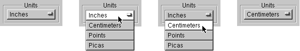

Release 3.3 Copyright ©1995 by NeXT Computer, Inc. All Rights Reserved.
| 1 |
A Visual Guide to the User Interface
| A user interface is more than the way an application looks on-screen. It's all the ways the application communicates with the user, and the user with the application. Beeps and other sounds are part of the user interface, as is the speed with which the application reacts to a mouse click. Still, the appearance of an application is a large part of its user interface. This chapter concentrates on how things look. How things act is covered in detail elsewhere.
The appearance of the NEXTSTEP user interface is influenced by the following goals: |
| A look and feel that's consistent across applications | ||
| A simple, elegant appearance that uses shading to give a three-dimensional effect | ||
| A color scheme based on black, white, and gray | ||
| The mouse as the primary input device |
| The figure above shows a typical NEXTSTEP screen (the workspace). In it, two applications have standard windows visible. (One of them also has a menu and a panel visible.) Other applications are running but have no visible presence besides an application icon and perhaps a miniaturized window (a miniwindow).
Although many applications can run at once, only one is the active application--the application that accepts all user input such as typing and mouse clicks. The user can tell which application is active by checking the menu displayed in the upper left of the screen; this menu always belongs to the active application. In the figure above, Edit is the active application. |
| An Application's Windows |
| Applications present their functionality to the user in three kinds of windows: standard windows, panels, and menus. Two other kinds of windows also appear on-screen: application icons and miniwindows.
All the user's typing goes to the current key window, which is one of the active application's standard windows or panels. The user can tell which is the key window by seeing which one has the black title bar. In the previous figure, the Find panel is the key window.
Standard Windows The parts of a standard window are labeled in the figure below. Not all standard windows need every part--for example, the first window displayed by the Workspace ManagerTMhas no close button, so that beginning users won't accidentally close the one window they need to use the Workspace Manager. |
| More information on standard windows, as well as windows in general, is in Chapter 4, "The Window Interface to Applications."
Panels Although panels can look just like standard windows, they have a different role: They help perform secondary functionality, supporting the work done in standard windows. Often, they let the user manage the contents of standard windows in specific ways. For example, in a text editor, a standard window holds the document being edited, and panels appear as necessary to get information--for printing, saving, searching, and so on. |
| The Font panel shown above is an ordinary panel. Ordinary panels let the user work in other windows and panels of the application while the panel is displayed.
Sometimes, however, a panel requires the user's immediate attention--for example, when the user must confirm a possibly destructive command. In this case, an attention panel is used. While an attention panel is displayed, the user can't do anything else in the application (although the user can work in other applications). Because attention panels work so differently from ordinary panels, they look different, as shown below. |
| Some panels, such as those shown in this section, have been standardized and are used in many applications. Using standard panels in your application helps the user be more productive, since the user has less to learn. Chapter 5, "Panels," gives more information about the standard panels and about creating application-specific panels.
Menus Menus give the user access to the full breadth of an application's functionality. A user should be able to get a good idea of what an application does by looking at its menu commands. As shown below, the application's menu commands are grouped into a main menu and its submenus. |
| A keyboard alternative is a combination of keys that can be used instead of the mouse for choosing a command. To choose a command from the keyboard, the user holds down the Command key while typing the character shown in the menu command. For example, to quit, the user can either click the Quit menu command or hold down the Command key and press q.
The main menu and many submenus are standard--in almost any application, they should have many of the same commands in the same order. Chapter 6, "Menus," describes the standard menus and commands, and gives guidelines on creating application-specific menus and commands.
Miniwindows |
| When the user clicks a window's miniaturize button (the left button in the title bar), the window shrinks down to become a miniwindow. To get the full-size window again, the user double-clicks the miniwindow
Application Icons Every running application is represented on-screen by an icon. This icon lets the user choose the application to work in. To choose an application, the user simply double-clicks its icon. An application icon can be either freestanding or docked. Docked icons line up along the right edge of the screen. They stay on-screen even when the applications they represent aren't running; this makes it easy to start up commonly used applications (by double-clicking the docked icon). A freestanding icon stays on-screen only as long as the application is running. Users can customize their environment by dragging application icons into and out of the application dock. |
| The Workspace Manager adds three small dots--similar to an ellipsis--in the lower left corner of a docked icon when the application the icon represents isn't running. The three dots disappear when the application is started up. While it's starting up, the icon is highlighted in white, as shown above. |
| Controls |
| Controls are devices that let users give information to or choose an action in an application. Controls are usually presented to users in panels or menus, although standard windows can also contain controls. The following figure shows some of the controls used in NEXTSTEP. (Although menu commands are controls, they're used only in menus, so they're illustrated in the "Menus" section, earlier). |
| The following sections describe each of the NEXTSTEP controls in more detail. If necessary, you can also create your own controls. Chapter 7, "Controls," has more information.
Buttons Buttons are the primary controls for starting an action or setting a state. Users manipulate buttons by moving the mouse so that the cursor is over the button, and then clicking--pressing and releasing the mouse button. Buttons can be very basic--with just a word or picture on a rectangular, raised-looking button--or they can be more complex. The following figure shows some simple buttons that are typical of those used to start actions. |
| Another kind of button that initiates actions is one that controls a pull-down list. A pull-down list is a combination of a button and a menulike list. The button itself doesn't cause an action (other than displaying the list), but it lets the user choose a list item that causes an action. For example: |
>>
| Buttons that set a state, as opposed to initiating an action, tend to be a little more complex than action buttons. Typical state buttons are shown in the figure below. |
| A pop-up list, like a pull-down list, is a combination of a button and a list. A pop-up list's button doesn't actually set a state, but it brings up a menulike list from which the user can choose an option that sets the state. Unlike a pull-down list, the title of a pop-up list's button changes to display the list item that was chosen (such as from Inches to Centimeters). |
|  |
| Text Fields |
| Text fields let the user enter data by typing. When the user presses Return or clicks a button associated with the text field, the application acts on the data.
Sliders |
| A slider sets a value between some minimum and maximum. The user can change the value by dragging the slider's knob.
Color Wells |
| A color well lets the user set the color of an object or the color to use for drawing. Color wells are often used in groups--for example, so the user can choose one color for the outline of an object and another color for its interior fill. One of the ways the user can change the color in a color well is by dragging in a color from another well.
Scrollers |
| Scrollers let the user control which part of a document or other data is displayed within a rectangular area. The user changes which part is displayed by dragging the scroller's knob or pressing its arrow buttons. The figure above shows two scrollers, a vertical scroller and a horizontal scroller.
Browsers and Selection Lists |
 |
| A browser shows text data that's organized in a hierarchy, such as files and folders. A selection list is like a browser, but it has only a single level. The user moves down the browser's hierarchy by clicking items that have a after them. In both browsers and selection lists, the user can select items by clicking them. |